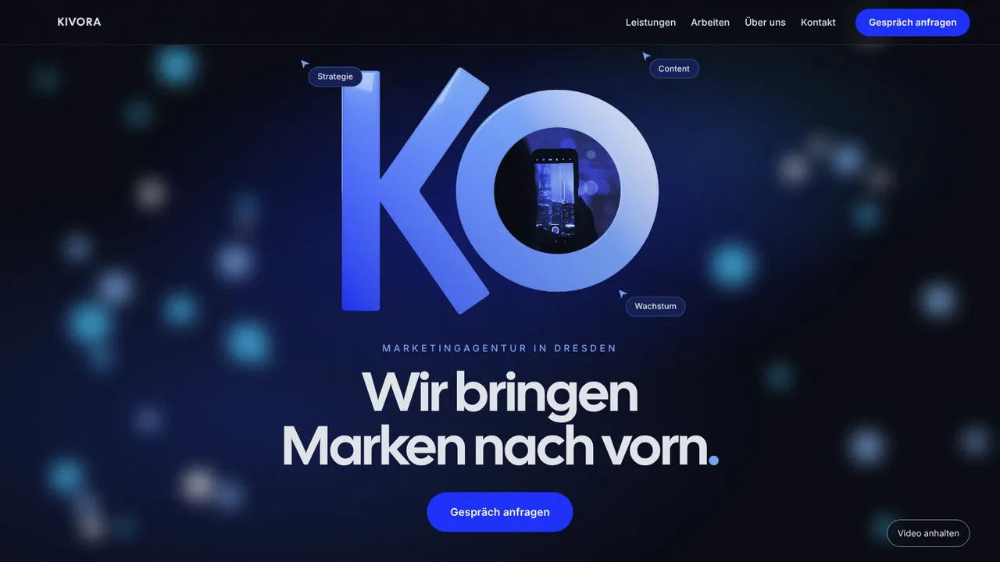
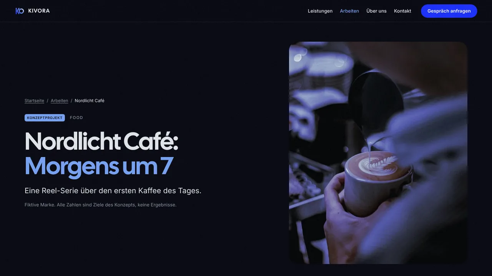
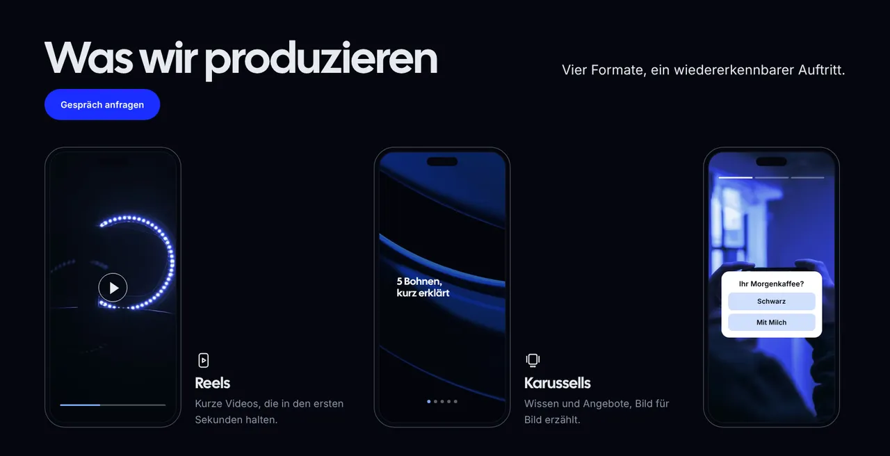

01 Die Ausgangslage
Eine neue Agentur ohne Referenzen.
KIVORA ist eine junge Marketingagentur aus Dresden. Sie plant Strategie, produziert Content wie Reels, Karussells und Stories und misst, was davon wirkt. Eine eigene Website, die das zeigt, gab es noch nicht.
Das Problem kenne ich gut: Wer neu ist, hat keine Kunden, die er zeigen kann. Viele Agenturen füllen die Lücke mit erfundenen Logos und Bewertungen. Das wollte ich nicht. Also habe ich die Seite als kostenlosen Vorschlag gebaut, mit einer klaren Regel: Nichts darauf wird als echt ausgegeben, was nicht echt ist.
02 Das Logo
Aus K und O wird eine Linse.
Ein langer Name ist klein auf dem Handy oder als Profilbild schwer lesbar. Deshalb habe ich aus den ersten zwei Buchstaben ein Symbol gemacht: Das K besteht aus einem Balken und einem offenen Winkel, das O aus einem dicken Ring mit einem Punkt in der Mitte. Zusammen sieht das aus wie eine Kameralinse, und genau darum geht es bei einer Content-Agentur.
Gezeichnet habe ich das Symbol als Vektorgrafik auf einem einfachen Raster, damit alle Striche gleich dick sind und es in jeder Größe scharf bleibt. Der Verlauf geht von einem kräftigen Blau zu einem hellen Himmelblau. Es gibt drei Fassungen: in Farbe, ganz in Weiß für dunkle Fotos und eine ohne Punkt, bei der das O frei bleibt.
Für die Startseite habe ich das Symbol zusätzlich in 3D gerendert, einmal frontal und einmal schräg, dazu ein leuchtender Ring als Bildelement. Die Fassung ohne Punkt wird im Kopfbereich zum Fenster: Im O läuft ein kurzes Video, in dem jemand nachts die Stadt mit dem Handy filmt. Wer Bewegung im System reduziert hat, sieht stattdessen ein ruhiges Standbild.
03 Die Assets
Fremde Bilder, eigener Look.
Eine neue Agentur hat noch kein eigenes Fotoarchiv. Die Fotos stammen deshalb von Unsplash, das Video von Pexels, beide mit freier Lizenz und vollständig auf einer eigenen Seite mit Bildnachweisen aufgeführt. Damit sie nicht nach Stockfoto aussehen, habe ich alle Bilder in denselben Blauton gebracht und eine feine Körnung darübergelegt. So wirkt alles wie aus einem Guss.
- Logo und 3DSymbol in drei Fassungen, zwei 3D-Renders, ein leuchtender Ring. Alles selbst gebaut.
- FarbenFast schwarzes Nachtblau als Grund, kräftiges Blau für Buttons, helles Blau für Akzente.
- SchriftenCal Sans für Überschriften, Inter für Texte. Beide frei lizenziert und auf dem eigenen Server.
- BilderJedes Bild in AVIF und WebP in mehreren Größen, das Kopfbild mit eigenem Ausschnitt fürs Handy.
- IconsEigene Symbole für Reel, Story, Karussell und Markenauftritt.
- VideoEin kurzer Clip im O des Logos, mit Pause-Knopf und Standbild als Ersatz.
04 Die Ideen
Konzepte zeigen, wie die Agentur denkt.
Statt erfundener Kunden zeigt die Seite fünf Konzeptprojekte für fiktive Marken: Nordlicht Café, Velura Skin, Atelier Mira, Kanto Bikes und Studio Wellenform. Jedes hat eine eigene Seite mit Ausgangslage, Idee, Formaten und einem Ziel, zum Beispiel 30 Prozent mehr Gäste werktags vor 10 Uhr beim Café. Jede Karte trägt das Etikett „Konzeptprojekt“, und unter jedem Ziel steht, dass es ein Ziel ist und kein Ergebnis.

Auf der Startseite zeigen drei Handys, was die Agentur produziert: ein Reel, ein Karussell und eine Story mit Umfrage. Darunter erklärt die Seite in wenigen Schritten, wie die Zusammenarbeit läuft, und beantwortet die häufigsten Fragen. Ein eigener Abschnitt spricht die ersten Kunden direkt an: Wer früh dabei ist, arbeitet direkt mit den Gründern.

05 Gedanken und Ziele
Was ich mit der Seite erreichen will.
Das erste Ziel ist einfach: KIVORA soll sehen, wie ihr Auftritt aussehen könnte, bevor sie Geld ausgeben. Texte, die nur die Agentur selbst liefern kann, etwa die Gründungsgeschichte und das Team, sind als Platzhalter markiert. Das Team steht dort bewusst ohne Stockfotos, bis echte Bilder da sind. Für die Terminbuchung ist ein Platz vorbereitet, ein Kalender lässt sich später einbauen.
Das zweite Ziel betrifft mich. Bisher habe ich vor allem für Läden und Betriebe gebaut. Mit KIVORA zeige ich, dass ich auch einen ganzen Markenauftritt kann: Logo, Farben, 3D, Video und eine Website, die das alles zusammenhält, schnell lädt und auf dem Handy ruhig bleibt. Vor der Übergabe habe ich Links, Ladezeit und Bedienbarkeit mit eigenen Prüfskripten getestet.
Was ich mitnehme: Ehrlichkeit kostet keine Wirkung. Eine Seite, die offen sagt, dass sie neu ist, wirkt nicht schwächer, sondern glaubwürdiger. Die Demo ist für Suchmaschinen gesperrt und das Kontaktformular sendet nichts. Wenn KIVORA die Seite übernehmen will, stelle ich sie auf ihre eigene Adresse um und schalte sie für Google frei.
Selbst ansehen
Hinweis: Dies ist eine Konzept-Website und nicht die offizielle Seite von KIVORA. Alle Arbeiten darauf sind Konzepte für erfundene Marken, keine Kundenprojekte, und keine Zahl ist ein echtes Ergebnis.